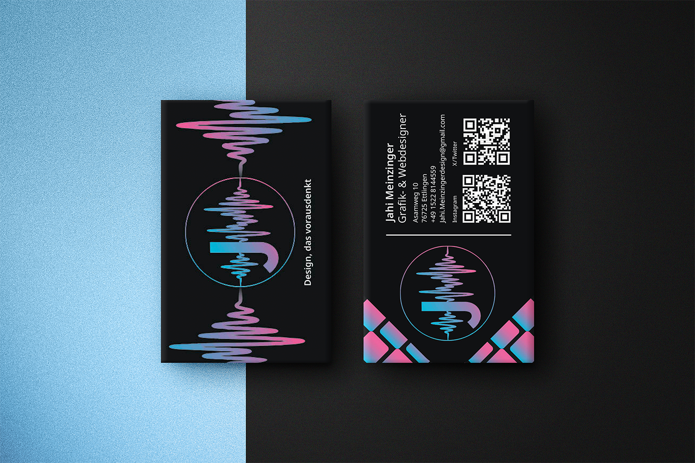
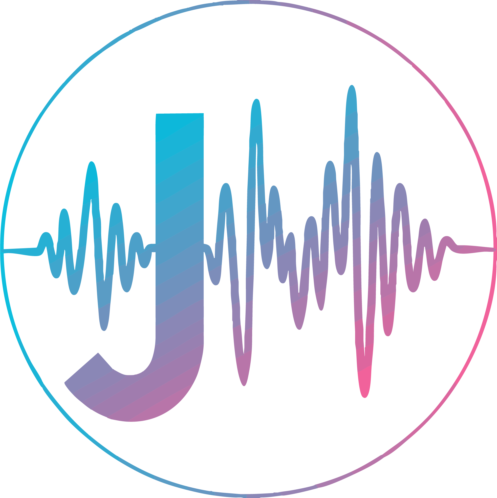
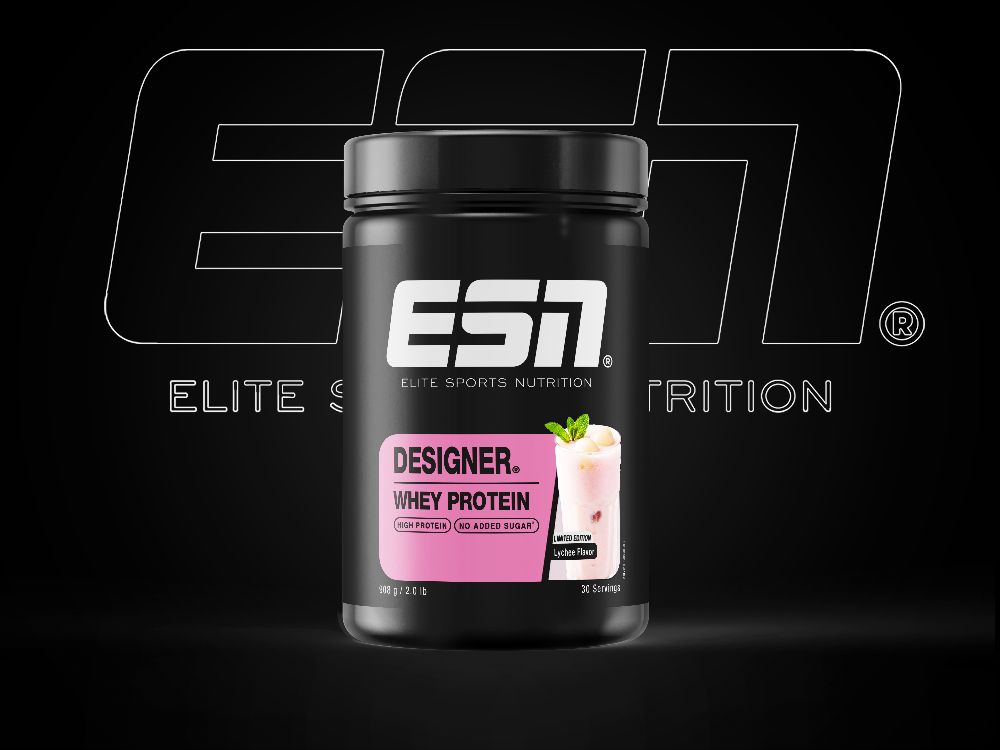
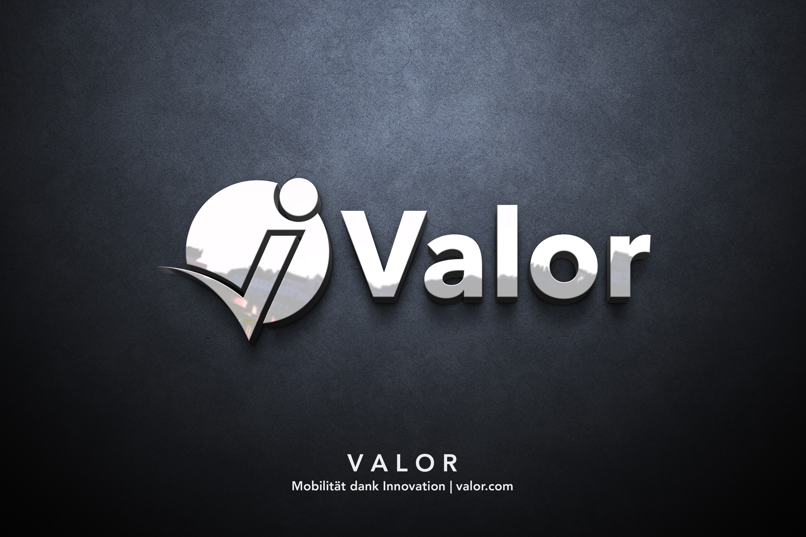
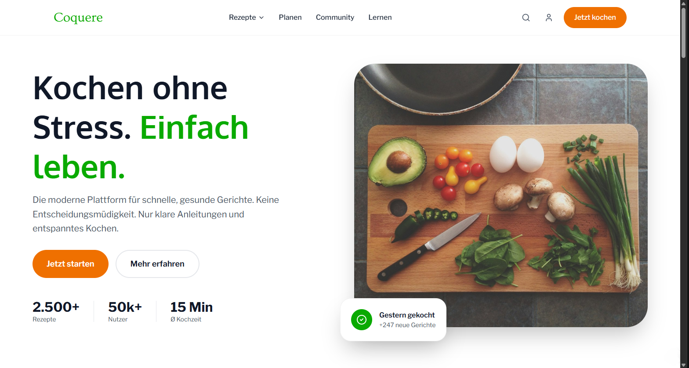
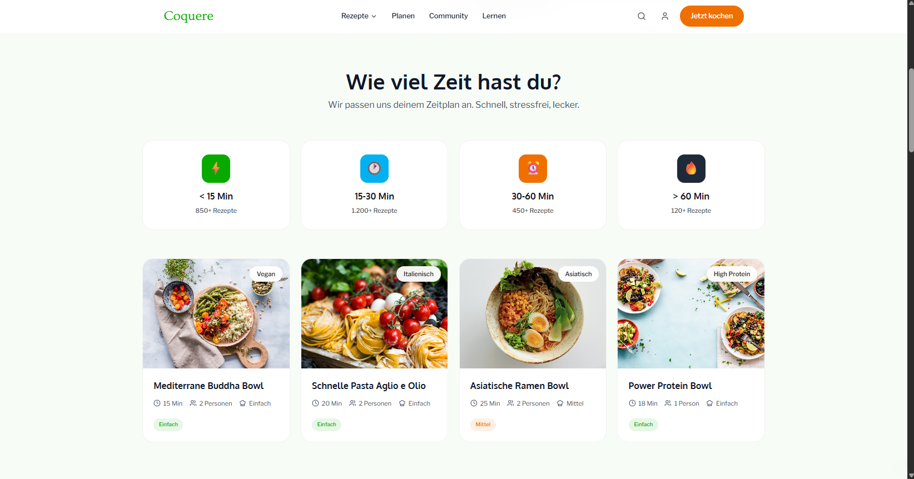

Visitenkarten
Moderne Visitenkartengestaltung im Corporate Design mit
individuellem Soundwave-Logo und klarem Branding.
Grafik- & Webdesigner: Ich gestalte intuitive Interfaces,
funktionale Konzepte und einheitliches Design.
Gutes Design beginnt an der Wurzel: Es gibt Ihrer
Botschaft einen Sinn und Ihrer Marke ein klares Ziel.
Eine Auswahl meiner Arbeiten aus Design, Code und Video.
Moderne Grafiken, intuitives UI/UX-Design und ästhetische Videoproduktion. Dank fundierter Agenturerfahrung sowie solider HTML- und CSS-Kenntnisse gestalte ich als Design Allrounder.

Moderne Visitenkartengestaltung im Corporate Design mit
individuellem Soundwave-Logo und klarem Branding.

Gutes Design löst Probleme; großartiges Design schafft Identität. Es geht nie nur darum, wie etwas aussieht, sondern wie es sich anfühlt, wie es funktioniert und welche Geschichte es erzählt
Grafik- & Webdesign
Konzeptstudie für ein ESN-Proteinprodukt, entwickelt um
technisches Know-how
und Kreativität im Verpackungsdesign unter Beweis zu
stellen. ( Dies ist ein reines
Design-Konzept ohne kommerziellen Hintergrund )

Entwurf eines ausdrucksstarken Kulturplakats, das die
emotionale und
düstere Ästhetik der Ballett-Inszenierung grafisch einfängt.

Ein zukunftsweisender Auftritt für ‚Valor‘: Das Konzept vereint moderne Typografie und eine kraftvolle Bildsprache zu einem stimmigen, wertwertigen Markenerlebnis.
Grafik & Webdesign
Große Lebens- und Karriereziele überfordern oft, weil der konkrete Weg dorthin im Nebel liegt. HabitShift bricht komplexe Vorhaben mithilfe intelligenter Algorithmen in tägliche, machbare Mikro-Schritte herunter und steuert deinen Fortschritt stressfrei direkt vom Smartphone aus.
UI/UX Figma & Appdesign
Smartes Food-Conscious Webdesign für stressfreies Kochen. Coquere kombiniert ein minimalistisches Designsystem mit smarter Bestandsprüfung und schnellen 15–30-Minuten-Gerichten für den perfekten Feierabend.
UI/UX FigmaGutes Design ist kein Zufall, sondern das Resultat klarer Prinzipien. Durch meine tägliche Arbeit in Design, Web und Video verbinde ich Ästhetik mit Funktion, um Zielgruppen zu erreichen.
Einheitliche Designsysteme für nahtlose Wiedererkennung über alle Kanäle hinweg.
Klarer Fokus durch bewussten Einsatz von Kontrast, Typografie und Weißraum.
Durchdachte Usability, die komplexe Inhalte vereinfacht und Ergebnisse liefert.